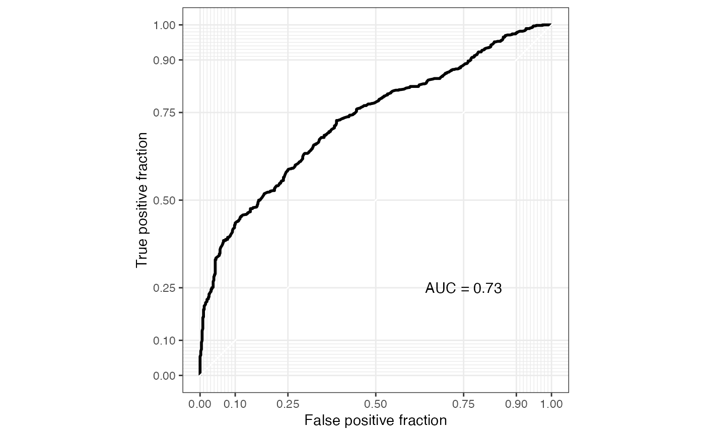

R/plot-sl-roc.R
plot_sl_roc.RdShow the ROC curve of the microbiome marker calculated by run_sl.
plot_sl_roc(mm, group, nfolds = 3, nrepeats = 3, tune_length = 5, ...)
| mm | a microbiomeMarker object. |
|---|---|
| group, nfolds, nrepeats, tune_length, ... | same with the |
a ggplot2::ggplot object.
data(enterotypes_arumugam) # small example phyloseq object for test ps_s <- phyloseq::subset_taxa( enterotypes_arumugam, Phylum %in% c("Firmicutes", "Bacteroidetes") ) set.seed(2021) mm <- run_sl( ps_s, group = "Gender", taxa_rank = "Genus", nfolds = 2, nrepeats = 1, top_n = 15, norm = "TSS", method = "LR", )#> Warning: return the original feature table.#>#>plot_sl_roc(mm, group = "Gender")